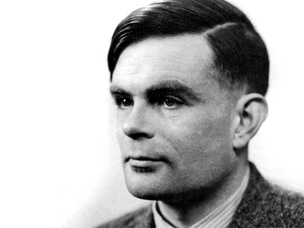

Biographer
Mathematician
Alan Turing was a brilliant mathematician. Born in London in 1912, he studied at both Cambridge and Princeton universities. He was already working part-time for the British Government’s Code and Cypher School before the Second World War broke out. In 1939, Turing took up a full-time role at Bletchley Park in Buckinghamshire – where top secret work was carried out to decipher the military codes used by Germany and its allies.
Enigma and the Bombe
The main focus of Turing’s work at Bletchley was in cracking the ‘Enigma’ code. The Enigma was a type of enciphering machine used by the German armed forces to send messages securely. Although Polish mathematicians had worked out how to read Enigma messages and had shared this information with the British, the Germans increased its security at the outbreak of war by changing the cipher system daily. This made the task of understanding the code even more difficult.
Turing played a key role in this, inventing – along with fellow code-breaker Gordon Welchman – a machine known as the Bombe. This device helped to significantly reduce the work of the code-breakers. From mid-1940, German Air Force signals were being read at Bletchley and the intelligence gained from them was helping the war effort..
Hut 8, Bletchley Park
Turing also worked to decrypt the more complex German naval communications that had defeated many others at Bletchley. German U-boats were inflicting heavy losses on Allied shipping and the need to understand their signals was crucial. With the help of captured Enigma material, and Turing’s work in developing a technique he called 'Banburismus', the naval Enigma messages were able to be read from 1941.
He headed the ‘Hut 8’ team at Bletchley, which carried out cryptanalysis of all German naval signals. This meant that – apart from during a period in 1942 when the code became unreadable – Allied convoys could be directed away from the U-boat 'wolf-packs'. Turing’s role was pivotal in helping the Allies during the Battle of the Atlantic.
Turing died on June 7, 1954. Following a postmortem exam, it was determined that the cause of death was cyanide poisoning. The remains of an apple were found next to the body, though no apple parts were found in his stomach. The autopsy reported that "four ounces of fluid which smelled strongly of bitter almonds, as does a solution of cyanide" was found in the stomach. Trace smell of bitter almonds was also reported in vital organs. The autopsy concluded that the cause of death was asphyxia due to cyanide poisoning and ruled a suicide.
Homosexuality, Conviction and Death
Homosexuality was illegal in the United Kingdom in the early 1950s, so when Turing admitted to police—who he called to his house after a break-in—in January, 1952, that he had had a sexual relationship with the perpetrator, 19-year-old Arnold Murray, he was charged with gross indecency. Following his arrest, Turing was forced to choose between temporary probation on the condition that he receive hormonal treatment for libido reduction, or imprisonment. He chose the former, and soon underwent chemical castration through injections of a synthetic estrogen hormone for a year, which eventually rendered him impotent.
Turing died on June 7, 1954. Following a postmortem exam, it was determined that the cause of death was cyanide poisoning. The remains of an apple were found next to the body, though no apple parts were found in his stomach. The autopsy reported that "four ounces of fluid which smelled strongly of bitter almonds, as does a solution of cyanide" was found in the stomach. Trace smell of bitter almonds was also reported in vital organs. The autopsy concluded that the cause of death was asphyxia due to cyanide poisoning and ruled a suicide.